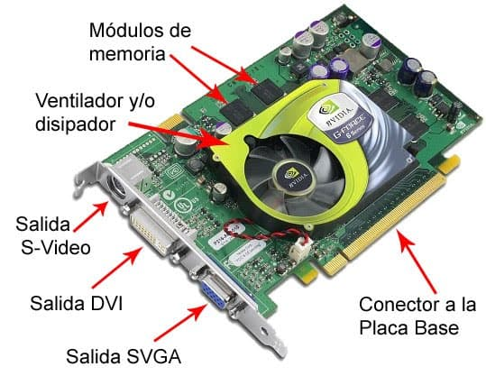

Tarjeta de video
Una tarjeta de video es un componente de la computadora encargado de crear y mostrar las imágenes en la pantalla.
Existen dos tipos principales: las integradas, que están incluidas en la placa base o el procesador, y son suficientes para tareas básicas como navegación y reproducción de videos,
y las dedicadas, que son componentes independientes que se instalan en la computadora y ofrecen un rendimiento mucho mayor, ideales para juegos, diseño gráfico y edición de video.
| Experiencia | Crecimiento | Aporte |
|---|---|---|
| Saltar en paracaídas | Sentir la adrenalina y superar un miedo | Dar a conocer experiencias |
| Viajar por el mundo | Conocer distintas culturas y conocimientos | Brindar experiencias y aprendizajes |
| Crear robótica | Desarrollar mi propia tecnología | Facilitar la vida mediante la tecnología y enseñar |
